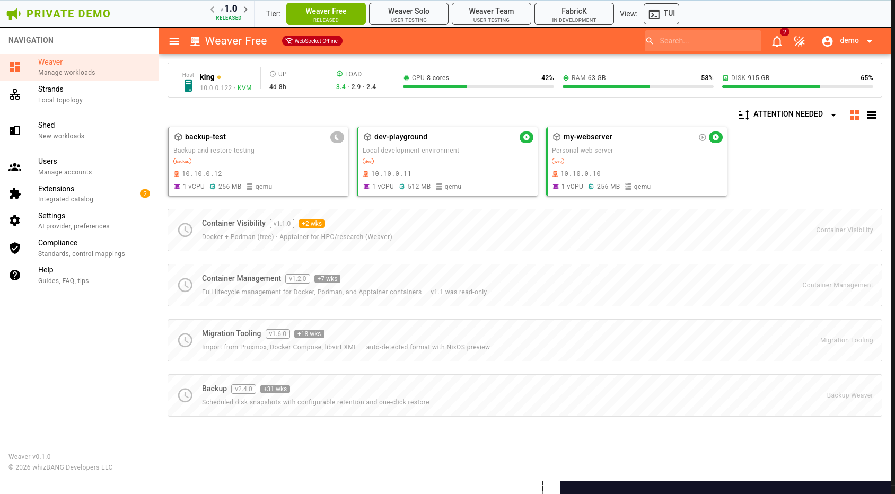
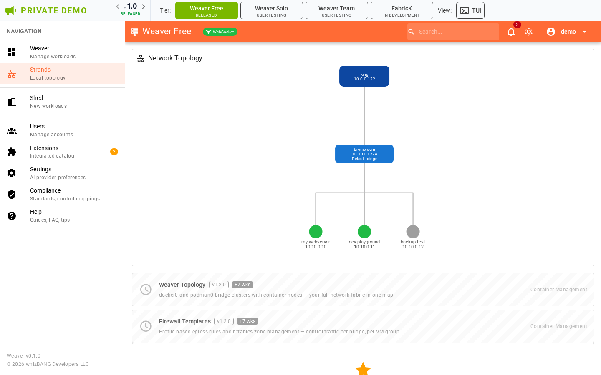
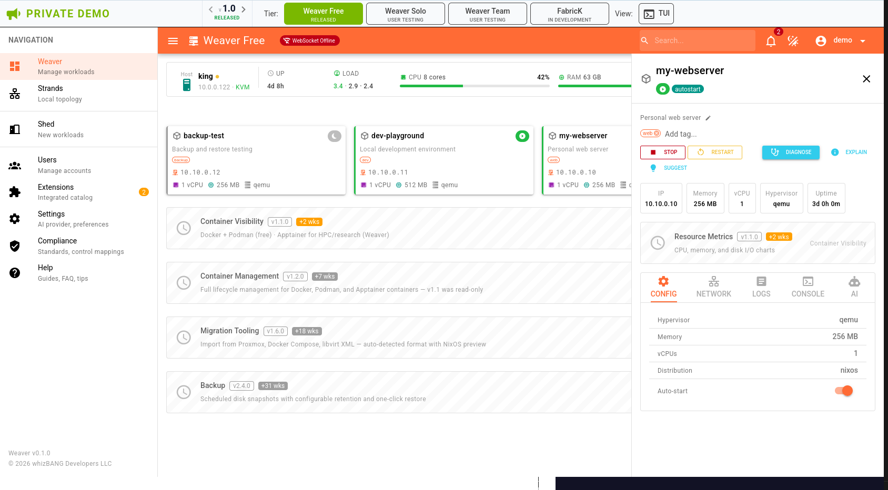
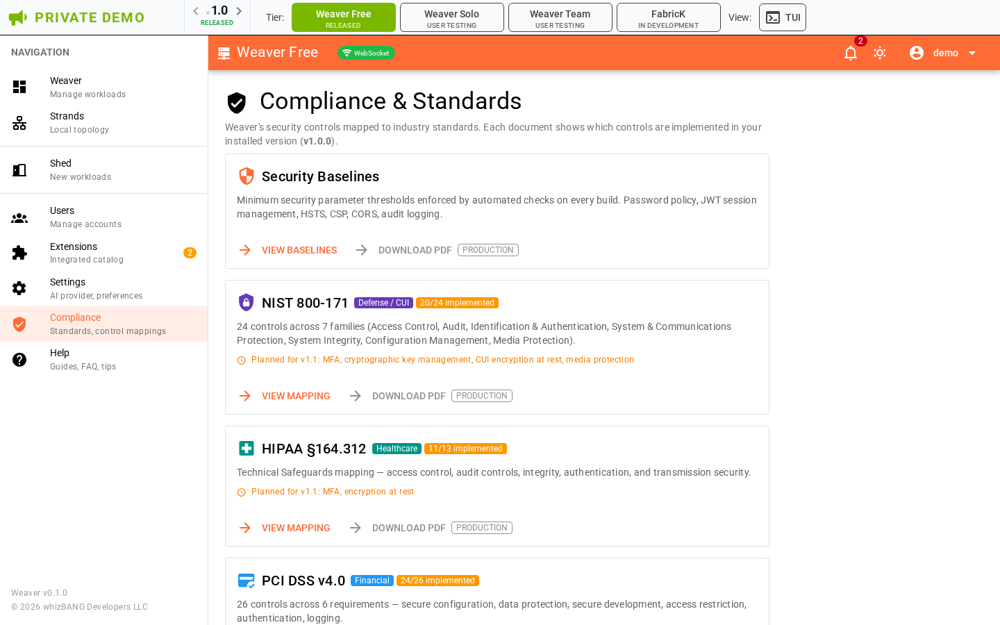
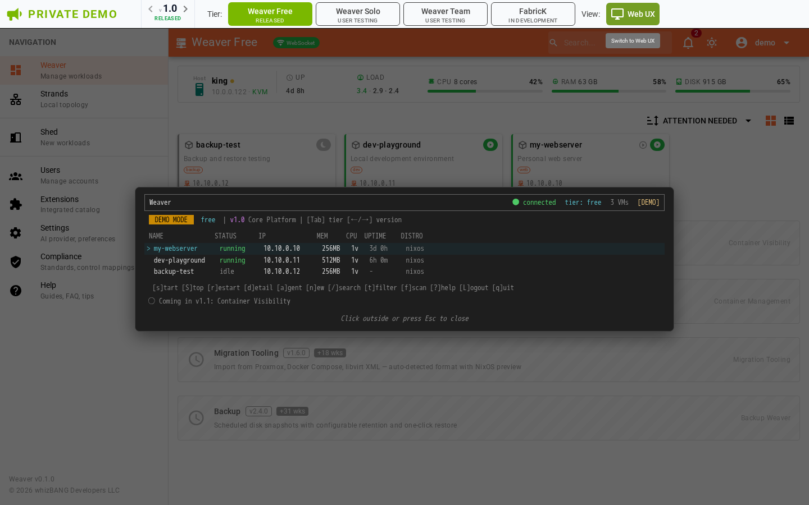
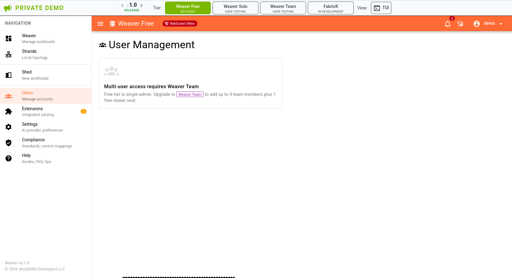
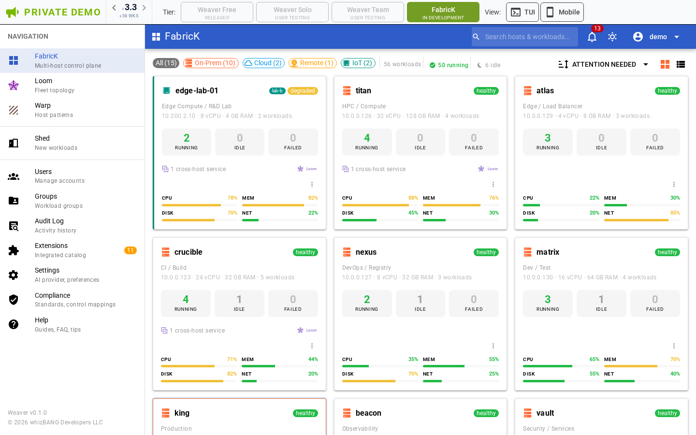

Your infrastructure is lying to you. We fixed that.
whizBANG Developers LLC — 2026
Every management tool today — Proxmox, VMware, Nutanix, Kubernetes — is built on mutable infrastructure. You deploy. Then the system changes underneath you.
The infrastructure you see is not the infrastructure you have.
The fix isn't better monitoring on a drifting foundation. It's a foundation where drift is architecturally impossible. That foundation exists. What it doesn't have is a management layer.
That foundation is NixOS — the only OS where configuration drift is mathematically impossible. Declarative, reproducible, immutable. Roots back to 2003, shipping stable releases for 12 years, 100K+ packages in production at ~466 companies. This isn’t experimental — it’s mature infrastructure that never had a management layer.
No NixOS expertise required. But until now, no one built the operational layer on top.
nixos-rebuild switch. One-time NixOS setup, then zero host rebuilds forever.No competitor has a mobile app — not Proxmox, not Kubernetes dashboards, not VMware.






| Layer | Market Size | Weaver's Entry |
|---|---|---|
| Linux servers worldwide | 15M+ servers in production | Observer: instant fleet visibility on any Linux |
| Cloud VMs | $250B+ cloud infrastructure market | Deploy NixOS on Hetzner, DO, AWS — manage from FabricK. No on-prem required. Cloud-only and hybrid fleets are first-class. |
| Edge computing | $22B, 37% CAGR | NixOS reproducibility = the edge differentiator (declarative, atomic rollback, identical fleet state) |
| VMware exodus | Gartner: VMware loses 35% of workloads post-Broadcom; avg 150% price increase, some 10×+ | Observer + parallel migration — zero-risk entry for fleeing VMware shops |
| Self-hosted infrastructure | Growing counter-trend to cloud concentration | Parallel migration — run alongside existing VMware/Proxmox/Docker |
| Post-Glasswing security | $100M coalition (Anthropic + 12 majors) | AI-discovered zero-days make hardware isolation a market requirement — shared-kernel is now a documented liability |
| NixOS-native (beachhead) | ~466 companies (up from ~293 in early 2026) | Zero competitors — no management interface exists for this stack |
| Weaver Free | Weaver Solo | Weaver Team | FabricK | |
|---|---|---|---|---|
| Price | $0 | $149/yr FM · $249 std | $129/user/yr FM · $199 std | $1,299/yr FM · $2,000 std |
| Target | Evaluator | Single sysadmin | 2–4 user team | IT department |
| AI diagnostics | BYOK | Credential vault | Credential vault | Credential vault |
| Live Provisioning | — | Yes | Yes | Yes |
| Containers (v1.1+) | Start/stop/logs | Full | Full | + RBAC, audit |
| Multi-user | — | — | 4 + 1 viewer | Unlimited |
| Smart Bridges | — | — | Basic | Full + inference |
| RBAC, audit log, quotas | — | — | — | Yes |
| Fleet topology (v3.0+) | — | — | — | Yes |
| Observer nodes (v2.3+) | — | — | — | Free — 5× Managed |
| Workload groups (v3.3+) | — | — | — | Yes |
WAVE 1: v1.0 — Production Launch (NOW)
Web + TUI + Live Provisioning + AI + 1,522 tests. GTM: demo site, content, community launch.
WAVE 2: v1.1–1.3 — Container Arc ("The Closer")
Apptainer + Docker/Podman → unified VM + container management. "The only interface that manages
MicroVMs, Apptainer, and Docker from one pane."
WAVE 3: v1.4–1.6 — AI + Secrets + Migration
Cross-resource AI, secrets management, Proxmox/libvirt/Docker import.
WAVE 4: v2.0–v2.2 — Storage, Templates, Team
Disk lifecycle, snapshots, workload templates, Weaver Team peer federation.
WAVE 5: v2.3–v2.6 — FabricK Clustering + Backup
weaver-observer (any Linux → fleet map), fleet discovery (Tailscale/CIDR/CSV/cloud),
nixos-anywhere onboarding, Warp (drift detection, blue/green), backup (local + fleet).
WAVE 6: v3.0+ — HA + Edge + Fleet Maturity
Live migration, HA failover, fleet virtual bridges (VXLAN + WireGuard overlay),
edge fleet (IoT, Yocto/Buildroot, aarch64), workload groups + compliance,
FabricK MCP Server — AI-native fleet API. Entry into $22B edge market.
WAVE 7: v4.0 — FabricK Cloud
WBD-hosted control plane ($150/yr/node FM). Path A (≥20 FMs): platform SaaS. Path B (<20): AI vertical.weaver-observer on any Linux breaks the NixOS-only constraint.| Kubernetes Requires | Annual Cost | Smart Bridges Replaces With |
|---|---|---|
| CNI plugin (Calico, Cilium) | $0–$15K | Bridge network (deployed from v1.0) |
| Ingress controller + MetalLB | $5K–$20K | Bridge active routing with health-based weight shifting |
| Argo Rollouts / Spinnaker | $10K–$50K | Automated blue/green via bridge weight API |
| GPU Operator + device plugin | $5K–$50K/node | VFIO-PCI passthrough — NVIDIA, AMD, Intel |
| Platform engineer to operate all of the above | $150K–$200K | Smart Bridges operates itself |
| Total | $170K–$335K/yr | Included in FabricK: ~$12K/yr |
| AI Capability | Tier | What It Does |
|---|---|---|
| AI Diagnostics | Free+ | Explain, diagnose, suggest — natural language workload analysis (BYOK) |
| Smart Bridges (basic) | Team ($199/user/yr) | Automated blue/green, health routing on local + peer bridges |
| Smart Bridges (full) + Inference | FabricK ($2,000/yr first node) | Fleet routing, GPU scheduling, model deployment, snapshot provisioning (2–5 sec restore), cordon, auto-scale |
The #1 enterprise objection: “We can’t switch everything at once.” Weaver eliminates it at every stage:
| Stage | What Happens | Risk |
|---|---|---|
| 1. Observe | Install weaver-observer (Rust binary, any Linux) on existing fleet. See everything in FabricK. Zero changes to running systems. | Zero |
| 2. Pilot | Convert 1–3 hosts to NixOS via nixos-anywhere. Run Weaver alongside existing stack. Both systems manage workloads in parallel. | Minimal |
| 3. Import | Use workload import tools (Proxmox configs, libvirt XML, Dockerfiles, Compose files) to migrate existing workloads. Preview before commit. | Controlled |
| 4. Expand | Convert more hosts as confidence grows. Observer nodes become Managed nodes — "Convert to Managed" button on every Observed host. | Incremental |
Cloud-only? Deploy NixOS on Hetzner, DigitalOcean, or AWS via nixos-anywhere. Manage entirely from FabricK. No on-prem hardware required. Hybrid fleets (cloud + on-prem + edge) are first-class — FabricK sees them all in one map.
No rip-and-replace. No cutover weekend. No retraining. The admin proves value on their own infrastructure before championing internally.

| Layer | Replaces |
|---|---|
| Observer — any host, any Linux | CMDB spreadsheets |
| Smart Bridges (full) — blue/green, inference | K8s + ingress + Argo |
| Workload Groups — compliance, AI policy | Manual scoping |
| Warp — config patterns, drift detect | Ansible/Puppet/Chef |
| Fleet Topology (Loom) — WireGuard map | Stale network diagrams |
| HA + Live Migration — failover, DR | VMware vMotion |
| Secrets — sops-nix, KMS, per-workload | HashiCorp Vault ($$$) |
| DNS — auto-zone, DHCP, split-horizon | Manual zone files |
Every workload group has its own AI policy — which models, which vendors, whether data leaves the network.
Marketing runs Mistral. Engineering runs Claude. Finance runs local-only. HIPAA workloads enforce local-only — no cloud AI, ever.
One fleet, one policy engine, per-group enforcement with full audit trail.
Free ($0) → "I can see my VMs" → proves value
Solo ($249/yr) → "I can manage from browser" → saves time
Team ($796/yr) → "My team + Smart Bridges" → eliminates manual ops
FabricK ($12K/yr) → "Fleet governance" → replaces platform teamFabricK economics: 10-node fleet ~$12K/yr replaces $175K–$320K in platform engineering. 20-node fleet ~$19.5K/yr. Compliance Export ($4K/yr) adds evidence automation for 8 frameworks.
| Microservice Benefit | Kubernetes Delivers Via | Weaver Delivers Via |
|---|---|---|
| Independent deployment | Helm charts + pod rolling updates | LP API call — Firecracker boots in seconds |
| Isolated failure domains | Namespace isolation (shared kernel) | MicroVM hardware isolation (separate kernel) |
| Per-service scaling | HPA + pod autoscaler | Bridge weight shifting + snapshot restore (2–5 sec) |
| Blue/green deployments | Argo Rollouts + service mesh | Smart Bridges — AI-managed, one component |
| Zero-drift config | GitOps (ArgoCD/Flux) | NixOS — drift is impossible by design |
| Traffic management | Istio/Linkerd virtual services | Bridge active routing — weighted per endpoint |
| Kubernetes (10 nodes) | FabricK (10 nodes) | |
|---|---|---|
| Platform team | $450K–$1.25M/yr | $0 |
| Infrastructure tooling | $30K–$320K/yr | Included |
| License cost | $0–$30K+/yr (OpenShift: $3K+/node) | $20K–$35K/yr |
| Total | $480K–$1.6M/yr | $20K–$35K/yr |
“You’re spending half a million a year on people and tools to manage Kubernetes. What if you didn’t need a platform team?”
Project Glasswing April 2026 — Anthropic + AWS + Google + Microsoft + NVIDIA + CrowdStrike + Cisco + Apple + Broadcom + JPMorganChase + Linux Foundation + Palo Alto Networks. $100M in credits. AI found thousands of zero-days that survived decades of human review.
| Glasswing Finding | Infrastructure Implication | Weaver’s Position |
|---|---|---|
| AI finds zero-days faster than humans can patch | Shared-kernel architectures (Docker, K8s) have a growing blast-radius problem | Hardware isolation per workload — container escapes are structurally impossible |
| Thousands of vulnerabilities in widely-deployed software | Monoculture hypervisors are a single point of failure | 5 hypervisors (QEMU, Cloud Hypervisor, Firecracker, crosvm, kvmtool) — diversity by design, per-workload selection, automated benchmarking to prove which backend fits each workload |
| 90-day disclosure cycle assumes patching is fast | Imperative systems have no guarantee a patch reaches every host | NixOS declarative model — patches are atomic, deterministic, fleet-wide |
| Offensive AI capabilities will proliferate | Isolation and auditability become table stakes, not weaver features | Audit trail on every change, compliance mapping to 8 regulatory frameworks |
| Glasswing Practice Area | Weaver Feature | Status |
|---|---|---|
| Vulnerability discovery | Deterministic builds — reproducible, auditable, no supply-chain surprises | Shipping |
| Secure development | NixOS flake inputs — pinned, hashed, verifiable dependency graph | Shipping |
| Patch management | Atomic fleet-wide updates via Warp — zero drift by construction | v2.3 |
| Threat detection | AI diagnostics + audit log + compliance export | Shipping / v2.2 |
| Incident response | Snapshot restore (2–5 sec), rollback, impermanence (ephemeral root) | Shipping / v2.0 |
| Configuration hardening | AppArmor, Seccomp, kernel profiles (Weaver Solo+); + Secure Boot, impermanence (FabricK) | Shipping v1.2+ |
| Access control | RBAC + TOTP + FIDO2 + SSO/SAML + per-group AI policy | Tiered, shipping |
The investor frame: “The market just discovered it needs what we already built.” First product in the post-Glasswing infrastructure market built for hardware isolation from day one.
| Switching From | Their Cost | Our Cost | What They Gain |
|---|---|---|---|
| VMware/vCenter | $5K-50K+/yr (150%+ post-Broadcom increases; Gartner: 35% workload loss) | $2,000/yr first node (FabricK) | Zero drift, declarative audit, Smart Bridges, parallel migration — no cutover risk, 90%+ savings |
| Proxmox | EUR355-1,060/yr/socket | $249/yr (Weaver Solo) | Modern UI, Live Provisioning, AI, NixOS reproducibility. Proxmox VE 9.1 added OCI containers + Datacenter Manager 1.0 for multi-cluster — still imperative, still no drift detection, no mobile. |
| Manual SSH | Staff time + risk | $249/yr | Weaver UI, automation, audit trail |
| Cloud VMs | $600-6K+/yr per VM | $249/yr | Self-hosted, no lock-in, sub-second boot, privacy |
NixOS makes configuration drift impossible by construction. No scanning tools, no remediation workflows. The running state is always exactly what’s declared.
Every competitor shares the host kernel. A single AI-discovered zero-day compromises every tenant. Weaver’s MicroVMs run separate kernels — container escapes are structurally impossible.
weaver-observer: statically-linked Rust binary (zero dependencies). 4 channels: signed binary, .deb, .rpm, Ansible Galaxy. 2 architectures: x86_64, aarch64. Install on any Linux host in <60 seconds. “Convert to Managed” button on every Observed host.
Confirmed: 1Password (SSO), Yubico (FIDO2), Kanidm (identity). Planned: Tailscale, NVIDIA, Hetzner + DigitalOcean, Anthropic (AI BAA for HIPAA).
| Metric | Status |
|---|---|
| Product | Fully functional — web interface, TUI, AI agent, 5 hypervisors |
| Test suite | 1,522 tests passing (266 unit + 643 backend + 183 TUI + 430 E2E) across 4 layers |
| Compliance pipeline | 26 automated auditors run on every push (tier parity, SAST, license, bundle, doc freshness, NixOS version, pricing sync) |
| Security | Red team audit completed — 21 findings, all dispositioned, 4 hardening fixes applied |
| CVD policy | Formal vulnerability disclosure policy: 48-hour acknowledgment SLA, 7-day critical fix SLA |
| Disaster recovery | Documented backup scope, recovery runbooks, service continuity procedures |
| Release discipline | 16-gate release checklist including legal/ToS review gate and insurance carrier touchpoint |
| Cross-browser | E2E tests pass across Chrome, Firefox, Safari, Edge, mobile viewports |
| Architecture | Fastify + Zod + RBAC + WebSocket + storage adapters — production patterns, not prototypes. 3,200+ line Developer Guide |
| Sales collateral | 13 sales docs: 12 industry verticals + AI inference value proposition |
| GTM ready | Private demo complete (tier-switcher + v1.0–v3.3 version-switcher + TUI parity) |
whizbangdevelopers.com
| Vertical | Key Regulations | Sales Doc |
|---|---|---|
| Healthcare | HIPAA, HITECH, 42 CFR Part 2, FDA Device Cybersecurity | healthcare.md |
| Defense Contractors | CMMC 2.0, NIST 800-171, DFARS, ITAR/EAR | defense-contractor.md |
| Financial Services | SOX, PCI DSS, GLBA, FFIEC, Basel III | financial-services.md |
| Pharma / Life Sciences | 21 CFR Part 11, GxP, ALCOA+, EU GMP Annex 11 | pharma-life-sciences.md |
| Government | FedRAMP, FISMA, NIST 800-53 | government.md |
| Education | FERPA, state privacy, CIPA | education.md |
| Manufacturing / OT | IEC 62443, NIST CSF, ISO 27001 | manufacturing.md |
| MSP / IT Consulting | Client compliance frameworks, multi-tenant | msp.md |
| Research / HPC | Institution + funding agency reqs | research-hpc.md |
| Telecommunications | FCC, CPNI, SOC 2, NERC CIP adjacency | telecommunications.md |
| Energy & Utilities | NERC CIP, IEC 62351, TSA Pipeline Security | energy-utilities.md |
| Open-Source Projects | Contributor infrastructure, reproducible builds, CI/CD | opensource-support.md |
Each doc includes: regulatory mapping tables, tier-specific feature mapping, ROI math, competitive positioning, deficiency remediation plans, objection handling, buyer personas, and discovery questions.
| Program | Standard Price | FM Price | Value |
|---|---|---|---|
| Adopt | $15,000 | $5,000 | NixOS onboarding, deployment playbook |
| Accelerate | $45,000 | $15,000 | Quarterly compliance mapping, fleet reviews, SIEM integration |
| Partner | $90,000 | $30,000 | Named engineer, roadmap influence, priority features |
Category averages scored 0–3 (higher = better). Full interactive charts at business/marketing/.
| Category | Weaver/FabricK | Kubernetes | Amazon ECS | Nomad | OpenShift | K3s/Rancher |
|---|---|---|---|---|---|---|
| Security & isolation | 3.0 | 1.7 | 2.3 | 1.7 | 2.4 | 1.6 |
| Compliance & auditability | 2.7 | 2.1 | 2.0 | 1.9 | 2.9 | 1.9 |
| Operations & ecosystem | 2.1 | 2.4 | 1.9 | 2.0 | 1.8 | 2.4 |
| Scalability & architecture | 3.0 | 2.7 | 2.0 | 2.1 | 2.7 | 2.0 |
| Overall | 2.7 | 2.2 | 2.0 | 1.9 | 2.4 | 2.0 |
Leads in 3 of 4 categories. The gap is Weaver-layer maturity (Operations) — a function of product age, not platform age. NixOS itself has 20+ years of development, 12 years of stable releases, and 100K+ packages; the management layer is what’s new.
| Category | Weaver/FabricK | Docker | Full VM | Firecracker | gVisor | Apptainer |
|---|---|---|---|---|---|---|
| Security & isolation | 3.0 | 0.6 | 1.8 | 2.8 | 2.0 | 1.0 |
| Reproducibility & compliance | 3.0 | 0.8 | 0.7 | 0.5 | 0.5 | 1.0 |
| Operations | 2.6 | 2.5 | 2.3 | 1.6 | 1.6 | 1.5 |
| Overall | 2.8 | 1.4 | 1.7 | 1.7 | 1.4 | 1.2 |
Leads every category. Key differentiator: manages the full isolation spectrum (MicroVMs + containers + HPC runtimes) from one interface. No other technology in the comparison does this.